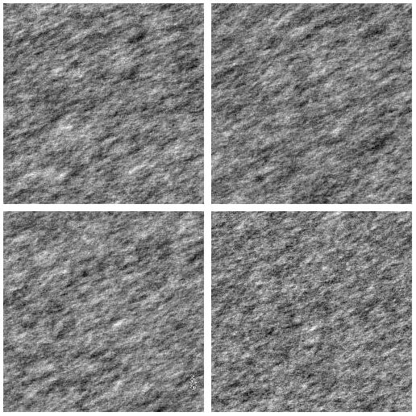

Overview
A decision model can look at an image. decide() takes
images in the argument image, alone or with
text. This vignette shows the image arguments on one task:
does a woven pattern have a flaw? It runs three models:
- Jev, from TypeSafe, with
decider_typesafe(). - The Decisions API of OpenAI, with
decider_openai(). Its default model isgpt-6-luna. - Clef-Flash, on a local SGLang server, with
decider_systemone().
The results below come from live calls. The package saved them in the
package folder extdata, so this vignette builds without a
key and without a network. The code that made them is in
vignette_results.R in the folder data-raw of
the GitHub
repository.
Microsoft-Decision-1 and Laya read text only. They are not in this vignette.
Image inputs
image takes one of these for each input:
- a file path,
- a URL,
- a magick image, or a list of magick images.
text and image can go together. Element
i of text and element i of
image make input i. The package needs the
magick package to read images. It turns each image upright, converts it
to sRGB and sends it as a JPEG.
Data
The package has the dataset textiles. It has 50
simulated images of a woven textile, 250 x 250 pixels. They are in the
folder
system.file("extdata", "textiles", package = "decisions").
Half of them show a flaw in the pattern. See ?textiles for
the details.
Source: the images come from the R package spc4sts. The public repository fmegahed/qe_genai shares them (MIT license, https://github.com/fmegahed/qe_genai).
Bui, A. T., & Apley, D. W. (2021). spc4sts: Statistical process control for stochastic textured surfaces in R. Journal of Quality Technology, 53(3), 219-242. https://doi.org/10.1080/00224065.2019.1707730
The CRAN page of spc4sts, which links its reference manual: https://CRAN.R-project.org/package=spc4sts
textile_dir <- system.file("extdata", "textiles", package = "decisions")
textiles <- textiles |>
dplyr::mutate(path = file.path(textile_dir, file))
dplyr::count(textiles, role, class)
#> # A tibble: 4 × 3
#> role class n
#> <chr> <fct> <int>
#> 1 input nominal 23
#> 2 input defective 23
#> 3 reference nominal 2
#> 4 reference defective 2The column role splits the images. Four images are
references, two for each class. The other 46 images are the inputs. The
column class is the truth.
The picture shows the four references. The top row has the two
nominal images. The bottom row has the two
defective images.
reference_files <- textiles |>
dplyr::filter(role == "reference") |>
dplyr::arrange(class, reference_rank)
reference_files$path |>
magick::image_read() |>
magick::image_montage(tile = "2x2", geometry = "250x250+4+4")
References
A reference is an image that shows what an answer looks like.
references is a named list. Each name is an answer of the
question. Each element has one or more images. The package prepares each
reference once and sends it with every input.
Question
One choice question has two answers. The descriptions are short. They say what the model sees.
weave <- question_choice(
"Does the woven pattern in `inspection_image` have a flaw?",
c(
nominal = "The weave is regular. The pattern repeats with no break.",
defective = "The weave has a flaw. A part of the pattern is broken, or the whole pattern is distorted."
)
)Image arguments
Three arguments set how the package prepares an image. They apply to the inputs and to the references.
| Argument | Meaning |
|---|---|
max_size |
The longest side in pixels after the resize. The default is 768.
NULL keeps the size. |
upscale |
TRUE enlarges an image that is smaller than
max_size. The default is FALSE. |
crop |
"none" (default), "center" (a centered
square), a box, or a function. |
A box is c(x, y, width, height) in pixels. The origin is
the top left of the image. The crop happens before the resize.
The textiles are 250 x 250 pixels. TypeSafe refuses images smaller
than 280 pixels. So Jev needs upscale = TRUE. With
max_size = 768, each image grows to 768 pixels.
Crop function
crop can be a function. It takes the magick image and
returns a box. This is the hook for an object detection model. A
detector would return the box of the object here, and the model would
see the object only. The function below is simple: it trims a border of
12 pixels.
trim_border <- function(image) {
info <- magick::image_info(image)
c(12, 12, info$width - 24, info$height - 24)
}Two hosted models
purrr::map() runs decide() once for each
hosted decider. Each call sends 46 images. Each request holds the four
references and one input.
deciders <- list(jev = decider_typesafe(), openai = decider_openai())
answers <- purrr::map(deciders, \(decider) {
decide(
decider, weave,
image = inputs$path, references = references,
max_size = 768, upscale = TRUE
)
})Clef-Flash
Clef-Flash is a model of Cloudflare. It runs on your computer, on a
GPU, and it costs nothing per call. The shell command below starts a
server with Docker. It is not run here. The image
lmsysorg/sglang:dev-clef holds SGLang. The first start
downloads the model.
docker run --gpus all --shm-size 8g --ipc=host -p 30000:30000 \
lmsysorg/sglang:dev-clef \
sglang serve --model-path Cloudflare/clef-flash --host 0.0.0.0 --port 30000When GET http://localhost:30000/health answers, the
server is ready. Clef-Flash reads the images in a list, so
image_format = "images". The server needs no key. With a
free model we can compare image settings: the same inputs with
max_size = 768, with max_size = 512, and with
the crop function.
clef <- decider_systemone(
"http://localhost:30000", "Cloudflare/clef-flash",
image_format = "images"
)
settings <- list(
`max_size 768` = list(max_size = 768),
`max_size 512` = list(max_size = 512),
`crop trim` = list(max_size = 768, crop = trim_border)
)
clef_answers <- purrr::map(settings, \(setting) {
rlang::exec(
decide, clef, weave,
image = inputs$path, references = references, upscale = TRUE,
!!!setting
)
})Performance
We bind the tibbles and add the truth. Each tibble has 46 rows, in
the order of the inputs. The levels of truth are
nominal and defective. The event is the second
level, so roc_auc_vec() gets
event_level = "second".
all_answers <- c(answers, clef_answers)
results <- all_answers |>
dplyr::bind_rows(.id = "model") |>
dplyr::mutate(
model = factor(model, levels = names(all_answers)),
truth = rep(inputs$class, times = length(all_answers))
)The next table has one row for each model and setting.
roc_auc is the area under the ROC curve, from
.pred_defective. errors is the number of rows
with an error. A row with an error has NA answers, and
yardstick removes it.
results |>
dplyr::group_by(model) |>
dplyr::summarise(
roc_auc = yardstick::roc_auc_vec(truth, .pred_defective, event_level = "second"),
errors = sum(!is.na(.error)),
input_tokens = sum(.input_tokens, na.rm = TRUE),
cost_usd = if (all(is.na(.cost))) NA_real_ else sum(.cost, na.rm = TRUE),
median_seconds = median(.seconds, na.rm = TRUE)
)
#> # A tibble: 5 × 6
#> model roc_auc errors input_tokens cost_usd median_seconds
#> <fct> <dbl> <int> <dbl> <dbl> <dbl>
#> 1 jev 0.750 0 379638 NA 0.729
#> 2 openai 0.802 0 140530 NA 0.778
#> 3 max_size 768 0.831 0 142738 NA 3.89
#> 4 max_size 512 0.830 0 69138 NA 1.83
#> 5 crop trim 0.848 0 142738 NA 3.99Forty-six images give a rough number only. One image changes the share of a class by 4 points. Use more images before you choose a model for real work.
Cost and time
TypeSafe, OpenAI and Clef-Flash report no cost, so .cost
is NA, and decide() prints one message about
it. All three report the input tokens. Each input holds four reference
images, so the input tokens are many. .seconds is the time
of one response. The requests run in parallel, so these times do not add
up to the time of the whole call.
Settings
The three Clef-Flash rows differ in one setting. The
roc_auc of the three is close: 0.83, 0.83 and 0.85. But
Clef-Flash answered nominal for all 46 images in each run.
Its probabilities rank the images, but the most likely answer is never
defective. So a cut-off below 0.5 would be needed for this
task. Jev answered defective for 14 images, and OpenAI for
9. Half of the images, 23, are defective.
A change of max_size changes the input tokens. The
images at 512 pixels need about half the tokens of the images at 768
pixels, and the calls take about half the time. The roc_auc
is the same to two digits. The crop function removes the border and
changes the roc_auc by 0.02. With 46 images, we cannot say
that this change is real. A setting that works for one model may not
work for another. Test each setting on your own data, with images that
you did not use to choose it.